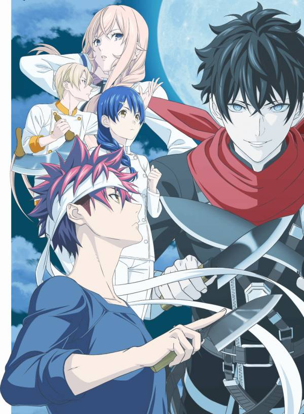

Shokugeki no Souma

Synopsis
Ever since he was a child, fifteen-year-old Souma Yukihira has helped his father by working as the sous chef in the restaurant his father runs and owns. Throughout the years, Souma developed a passion for entertaining his customers with his creative, skilled, and daring culinary creations. His dream is to someday own his family's restaurant as its head chef.
Yet when his father suddenly decides to close the restaurant to test his cooking abilities in restaurants around the world, he sends Souma to Tootsuki Culinary Academy, an elite cooking school where only 10 percent of the students graduate. The institution is famous for its "Shokugeki" or "food wars," where students face off in intense, high-stakes cooking showdowns.
As Souma and his new schoolmates struggle to survive the extreme lifestyle of Tootsuki, more and greater challenges await him, putting his years of learning under his father to the test.
Information
Type: TV
Episodes: 24
Status: Finished Airing
Aired: Apr 4, 2015 to Sep 26, 2015
Premiered: Spring 2015
Broadcast: Saturdays at 02:25 (JST)
Producers: Dentsu, Frontier Works, Mainichi Broadcasting System, Magic Capsule, Warner Bros. Japan, KlockWorx, Showgate, Shueisha, I Will
Licensors: Sentai Filmworks
Studios: J.C.Staff
Source: Manga
Genres: Ecchi, School, Shounen
Duration: 25 min. per ep.
Rating: PG-13 - Teens 13 or older
Related Anime
Adaptation: Shokugeki no Souma
Side story: Shokugeki no Souma OVA
Sequel: Shokugeki no Souma: Ni no Sara
Back to Main Page